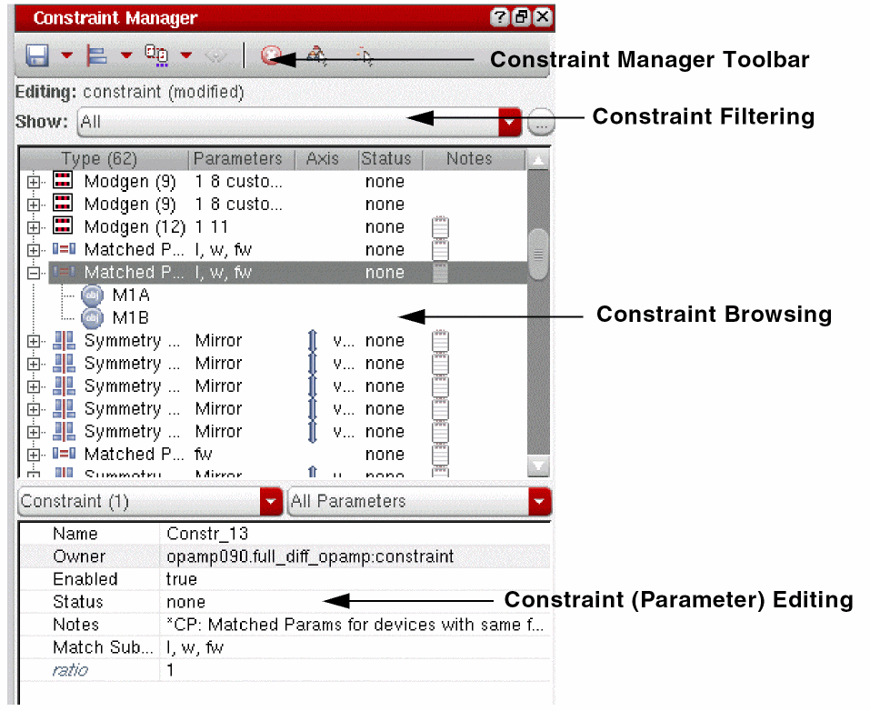
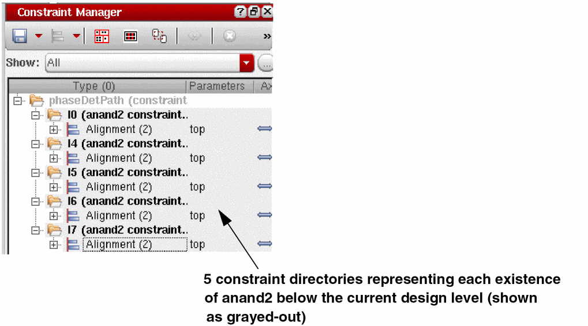
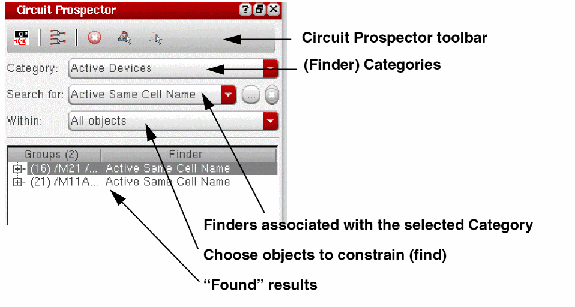
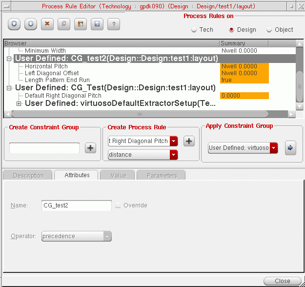

Getting Started with Virtuoso Unified Custom Constraints
Document Overview
This document, describing the Virtuoso® Unified Custom Constraints (constraints) system in the IC releases, is intended as an introduction to constraints and how their use and application can improve your current work processes.
Topics Covered
The topics covered in this document have been chosen to provide you with an understanding of what constraints are, how they work in Virtuoso IC releases, and how you can make best use of them, whether you are completely new to constraints or already have a general understanding of their use and benefits across the design flow.
The topics covered in this document are as follows:
- Why Use Constraints?
- What Constraints Functionality is Available?
- What is the Recommended Constraints Flow?
- What are Constraints and How are they Created?
- What is the Constraint Manager?
- How Do I Create and Edit Constraints at Different Design Levels?
- How does the Circuit Prospector Help in Constraint Creation?
- How do I Manage the Transfer and Checking of Constraints Between Schematics and Layout?
- What is the Relationship Between Process Rules and Constraints?
Related Information
For more detailed information on the constraints system see:
- Virtuoso Unified Custom Constraints Configuration Guide
- Virtuoso Unified Custom Constraints SKILL Reference
- Virtuoso Unified Custom Constraints User Guide
- Virtuoso Unified Custom Constraints Known Problems and Solutions
- Virtuoso Unified Custom Constraints What’s New
Why Use Constraints?
-
Benefits of using constraints
Using constraints can provide you with a wide range of benefits that will improve the information dialog between applications in your design flow.
Some of the benefits to be gained from using the unified constraints system in Virtuoso include:- the ability to capture and better represent design intent in a formal way.
- interactive tracking and reuse of constraint information across applications, for example, the Virtuoso Schematic Editor and the Virtuoso Layout Suite.
- productivity enhancements by using automated and interactive constraint-driven tools.
- the opportunity to perform what/if experiments based on the setting of particular constraints and their parameter settings.
- the facilities to check and verify data.
- the ability to reuse constraints for the same cell where a schematic cell is reused.
- better management and visualization of data.
-
Constraints assisting across the design flow
The use of constraints can assist across the design flow by: -
Where are constraints utilized?
Constraints can be used to:- improve the dialog between front and back-end engineers.
- maintain the relationships demanded by a specification by utilizing Constraint Aware Editing functionality in the Virtuoso Layout Suite XL.
- accelerate specification creation and management.
- implement status tracking.
-
apply automatic place and route to specification.For information on what constraints each Virtuoso tool supports see the Constraint Type and Supported Application Overview section in the Virtuoso Unified Custom Constraints User Guide.
What Constraints Functionality is Available?
The Virtuoso unified custom constraints systems provides the following main functionality elements:
-
The Constraint Manager which is used to create and manage constraints and their parameters.
See also: What is the Constraint Manager?. -
The Circuit Prospector which is used to assist in the capture and creation of constraints.
See also: How does the Circuit Prospector Help in Constraint Creation? - Halo selection to visually highlight the existence of constraints on the design canvas.
- Specialist editors, in the Constraint Manager, such as the Cell Planner, Modgen Editor and Process Rule Editor to edit particular constraints.
- Full SKILL API for integrating and extending functionality and also for customer created constraints and constraint algorithms.
What is the Recommended Constraints Flow?
An overview of a typical use of the constraint management functionality in Virtuoso is shown below. This overview is however for guidance only. Some elements of this flow are discussed further in this document, but for more detailed information, see Related Information.
What are Constraints and How are they Created?
-
What is a Constraint?
A constraint can be defined as being:- a measurable design intent that can influence the implementation, placement or routing in a system, for example a design object in respect of its goal.
- requirements that need to be followed during design implementation.
- specification limits for design objects.
- collections of parameters that describe design intent.
-
How are Constraints Created?
- Constraints are created using the Constraint Manager and the Circuit Prospector in the Virtuoso Schematic Editor XL and the Constraint Manager in the Virtuoso Layout Suite XL (and higher tiers).
-
Full-custom constraint entry in the Constraint Manager allows designers to create constraints by selecting groups of devices, nets, pins or terminals on the canvas and then applying a particular constraint to these objects.
In brief, to create constraints in the Constraint Manager:
1. Display the Constraint Manager.
2. (Optionally) descend to the level of the design hierarchy that you want to create the constraint in.See also How Do I Create and Edit Constraints at Different Design Levels? for more information on how constraints can be reused at different levels of the design.3. Select the design objects in the canvas that are to be constraint members.
4. Create the constraint by selecting a constraint type from the constraint generator option on the Constraint Manager toolbar. -
Topology-aware accelerated constraint entry in the Circuit Prospector allows constraints to automatically be applied to common circuit structures and related devices with particular characteristics/connectivity. Saving on a time consuming manual process.
In brief, to create constraints in the Circuit Prospector:
1. Select a category in the Circuit Prospector.
2. From a range of filtered finders, choose one to search for those devices to be constrained.
3. Choose the objects that the constraint should be applied to.
4. Create the constraints based on the finder search results.
What is the Constraint Manager?
-
Constraint Manager Access
The Constraint Manager is a user-interface that provides for the creation, browsing, visualization, and editing of constraints in a design. It is available in the Virtuoso Schematic Editor XL (schematics) and the Virtuoso Layout Suite XL (and higher tiers) (layout). -
Constraint Manager Structure
The Constraint Manager comprises of a toolbar, constraint filter area, browsing area, and a constraint (parameter) editing area.
Figure 2-1 The Constraint Manager in Schematics
-
Creating Constraints
Constraints are created by selecting one or more objects from the design canvas, or from the Navigator, and then selecting the required constraint type from the constraint generator pull-down in the Constraint Manager toolbar. The newly created constraint will then be displayed in the browsing area of the Constraint Manager and the newly constrained objects haloed (highlighted) in the design canvas. -
Constraint Manager Toolbar
The Constraint Manager toolbar contains several options that allow you to save, create, set the editing mode for, and also delete constraints. It also provides access to a number of constraint editor tools (the Cell Planner, Module Generator and Process Rule Editor) as well as being the location where you would specify your constraint view configuration. -
Constraint Filtering
Constraint filtering functionality can be found directly below the Constraint Manager toolbar. Selecting the Show pull-down option displays a list of pre-defined filters that can control what constraints are shown in the constraint browsing area (for example only placement constraints can be chosen to be displayed). As well as selecting from pre-defined filters you can also create your own filters using the Customize Constraint Filters form which is accessible by selecting the ... button adjacent to the Show pull-down. -
Constraint Manager Context-Menu
The Constraint Manager context-menu is displayed by right-clicking over the constraint browsing area. This menu includes a number of important functions including options to set halo display configuration, add additional constraint members, and also the option to choose whether you want to view by particular object groups or by constraints (the default). -
Constraint Browsing
The constraint browsing area lists those constraints that already exist in the current design. It has a number of sortable columns that detail the constraint type, the members it contains, as well as information on the current Status of a constraint, a summary of its key Parameters, the constraint Axis setting, and whether the constraint currently has a Note associated with it. Floating your cursor over a constraint in the browsing area will also display related ToolTip information for that constraint. -
Constraint (Parameter) Editing
Selecting a constraint in the Constraint Manager will automatically display its parameters in the constraint parameter editing area. You can proceed to edit the parameter values here.
Additional useful (generic) parameters that can be set in the constraint parameter editing area include being able to add Notes to particular constraints to convey additional guidance for use, as well as the ability to set constraint Status and also instructions as to whether a constraint is to be currently considered enabled or disabled.
How Do I Create and Edit Constraints at Different Design Levels?
-
Constraint Storage and Display
Constraints that have been defined in a schematic are stored in a constraints cellview alongside the top schematic and each schematic cellview in the hierarchy.
When a cell with constraints is used in a design, the constraints will appear in the Constraint Manager for each instantiation of that cell in the design. The Constraint Manager displays the constraints for the current cell and also the constraints that exist in all sub-cells from that point down in the design hierarchy.
The constraints for the sub-cells are displayed in a hierarchy of constraint directories in the Constraint Manager, where the constraint directory hierarchy will mirror that of the design hierarchy.
 -
Constraint Creation and Edits at Lower Levels in a Design
You can create constraints at the top level of a design or further down the design hierarchy.
Constraints that exist at a lower level in the design hierarchy, although shown in the Constraint Manager, cannot be directly edited. The display background of these “sub-cells” is grayed out to indicate this non-editable status.
To create/edit a constraint at a lower level in the design you should first of all either: -
Constraint Overrides
To modify a sub-cell constraint, so that the modification will be specific to the current cell, you must first set the constraint to be overridden. This is done by selecting the sub-cell constraint in the Constraint Manager and then selecting the Create Override option from the Constraint Manager context-menu.
The override constraint will be created at the current level in the design and can then be edited directly as required. The sub-cell constraint will be “struck-out” to indicate that is has been overridden, and will also have an override icon overlaid onto it. -
Moving Constraints between Current Cell and Sub-Cells
Constraints can be moved from a sub-cell to the current cell (as currently displayed in the design canvas), or moved from the current cell to a sub-cell by selecting the appropriate constraints and then selecting to Move to Current Cell or Move to Sub-Cell from the Constraint Manager context-menu, as appropriate.
How does the Circuit Prospector Help in Constraint Creation?
-
Circuit Prospector Access
The Circuit Prospector is available in the Virtuoso Schematic Editor XL (schematics). -
Circuit Prospector Structure
The Circuit Prospector comprises of a toolbar and a selection of drop-down options used for selecting and creating finders, and a finder results browsing area.
Figure 2-2 The Circuit Prospector -
What is the Circuit Prospector?
The Circuit Prospector is a graphical user-interface that can be used to capture designer expertise and best practices to help accelerate the constraint entry process.
The Circuit Prospector achieves this by providing a range of pre-defined finders. The Circuit Prospector will then use a selected “finder” to identify common occurring configurations of devices, terminals, nets and/or pins to which constraints can then be quickly applied.The Circuit Prospector provides a selection of pre-defined finders that are PDK independent. The Circuit Prospector also has an extensive SKILL API that can be used to register devices so that the finders will work with any PDK.As the Circuit Prospector is fully customizable, it is also convenient to define new categories, finders, iterators, and constraint generators to better suit your requirements. -
Why use the Circuit Prospector?
The Circuit Prospector can be used to:- Facilitate automatic, swift constraint entry which is beneficial because:
- Retrieve and group design objects by common criteria and suggest relevant constraints to be applied.
- Verify the correctness of a schematic (for example, finders can be defined to check bulk connections for MOS devices).
-
Circuit Prospector Finders
Finders are grouped together in categories, for example Active Devices. Once a category has been selected, one or all of the finders, for example Common Gate, for that category can be selected to run on the current schematic. The results from running these selected finders will be displayed in the finder results browser area. -
Creating Constraints from the Circuit Prospector
Selecting finder results from the browsing area will cross-select the associated devices, terminals, nets, and/or pins on the design canvas. Then, selecting to Create Default Constraints, from the toolbar, will create those constraints on the selected objects that are associated with that finder.
The newly created constraints will then be displayed in the Constraint Manager. -
Capturing Structures in the Circuit Prospector
The Capture Structure toolbar option is used to allow for structures, and their associated constraints, to be captured from selections on the design canvas.
The captured structures can be customized during the capture process to make them more generic (PDK independent) and specific device parameter value requirements can also be specified.New finders are created for each captured structure so that these structures can be identified in other schematics and the same constraints then applied.
How do I Manage the Transfer and Checking of Constraints Between Schematics and Layout?
The following constraint management functionality can be used to control and maintain constraint relationships between schematics and layout:
- Constraint consistency checks are performed on constraint creation.
- The current status of a constraint in layout can be checked and refreshed in the schematic Constraint Manager.
- The Constraint Comparison Report is used to compare the constraints set on the schematic and layout views, sorting any differences into various categories.
-
Constraint transfer happens automatically when using VLS XL (from logical to physical).
Here, all the constraints for an entire design will be transferred to the layout view, not just the top level constraints.
See also Transferring Constraints Between Schematics and Layout. - You can use the Update Layout Constraints toolbar option in the Virtuoso Layout Suite XL (and higher tiers) Constraint Manager, which will perform a constraint status comparison for the existing layout constraints against their equivalent constraint status in schematics.
- You can use the Cadence Hierarchy Editor (HED), specifically the global Constraint List option, to configure constraints for a design hierarchy.
-
Connectivity updates can be performed in the Virtuoso Layout Suite XL to reuse constraints created in schematics.
For example, you could utilize an alignment constraint, created using the Constraint Manager in a schematic view, to control pin placement in a layout view. - Color coding of constraints is used to visualize the current constraint status.
What is the Relationship Between Process Rules and Constraints?
-
What are Process Rules?
Process rules areoaConstraints(OpenAccess constraints) that represent the foundry rules for a given process. A process rule is a rule that constrains the implementation of a design based on the physical characteristics of the process technology being used. -
What are Process Rules used for?
As well as representing foundry rules for a particular process, process rules can be used to:- override (modify) foundry rules related to particular design objects.
- further parameterize certain constraints in the Constraint Manager.
-
How are Process Rules Created and Edited?
Process rule groups (constraint groups) can be added to a technology file or design using the Process Rule Editor (PRE).
You can create process rules to form new constraint groups, or choose to add new process rules as additional groupings in existing constraint groups. -
What is the Process Rule Editor (PRE)?
The Process Rule Editor is a graphical user interface used to create and edit process rules. It is also used to specify how process rules will be contained; whether that is in a new or existing constraint group.
The Process Rule Editor can be accessed from the Constraint Manager toolbar (see constraint editor tools) in the Virtuoso Schematic Editor XL (schematics) and the Virtuoso Layout Suite XL (and higher tiers) (layout).
Figure 2-3 The Process Rule Editor -
What is a Constraint Group?
- A constraint group is a collection of constraints and process rules created for a technology database or a specific design.
- Constraint groups can be created, edited and deleted using the PRE and can be applied to particular object types, specific constraints, and designs.
- The PRE can be used to alter the precedence/importance of a constraint group.
- Constraint groups exist in particular technology databases and can be made up of multiple sub-constraint groups.
- For a constraint group (and the process rules contained therein) to be applied to an object, design or technology database, it must be a member of the default constraint group for that design/technology.
Return to top